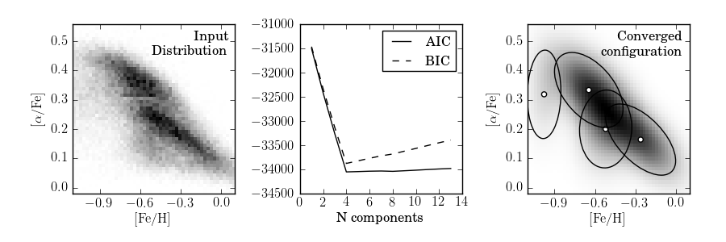

EM example: Gaussian Mixture Models¶
This shows a gaussian mixture model of the metallicity data from the SDSS Segue Stellar Parameters Pipeline.
@pickle_results: using precomputed results from 'GMM_metallicity.pkl'
best fit converged: True
BIC: n_components = 4
# Author: Jake VanderPlas <vanderplas@astro.washington.edu>
# License: BSD
# The figure produced by this code is published in the textbook
# "Statistics, Data Mining, and Machine Learning in Astronomy" (2013)
# For more information, see http://astroML.github.com
import numpy as np
from matplotlib import pyplot as plt
from scipy.stats import norm
from sklearn.mixture import GMM
from astroML.datasets import fetch_sdss_sspp
from astroML.decorators import pickle_results
from astroML.plotting.tools import draw_ellipse
#------------------------------------------------------------
# Get the Segue Stellar Parameters Pipeline data
data = fetch_sdss_sspp(cleaned=True)
X = np.vstack([data['FeH'], data['alphFe']]).T
# truncate dataset for speed
X = X[::5]
#------------------------------------------------------------
# Compute GMM models & AIC/BIC
N = np.arange(1, 14)
@pickle_results("GMM_metallicity.pkl")
def compute_GMM(N, covariance_type='full', n_iter=1000):
models = [None for n in N]
for i in range(len(N)):
print N[i]
models[i] = GMM(n_components=N[i], n_iter=n_iter,
covariance_type=covariance_type)
models[i].fit(X)
return models
models = compute_GMM(N)
AIC = [m.aic(X) for m in models]
BIC = [m.bic(X) for m in models]
i_best = np.argmin(BIC)
gmm_best = models[i_best]
print "best fit converged:", gmm_best.converged_
print "BIC: n_components = %i" % N[i_best]
#------------------------------------------------------------
# compute 2D density
FeH_bins = 51
alphFe_bins = 51
H, FeH_bins, alphFe_bins = np.histogram2d(data['FeH'], data['alphFe'],
(FeH_bins, alphFe_bins))
Xgrid = np.array(map(np.ravel,
np.meshgrid(0.5 * (FeH_bins[:-1]
+ FeH_bins[1:]),
0.5 * (alphFe_bins[:-1]
+ alphFe_bins[1:])))).T
log_dens = gmm_best.score(Xgrid).reshape((51, 51))
#------------------------------------------------------------
# Plot the results
fig = plt.figure(figsize=(9, 3))
fig.subplots_adjust(wspace=0.4,
bottom=0.2, top=0.9,
left=0.1, right=0.95)
# plot density
ax = fig.add_subplot(131)
ax.imshow(H.T, origin='lower', interpolation='nearest', aspect='auto',
extent=[FeH_bins[0], FeH_bins[-1],
alphFe_bins[0], alphFe_bins[-1]],
cmap=plt.cm.binary)
ax.set_xlabel(r'$\rm [Fe/H]$')
ax.set_ylabel(r'$\rm [\alpha/Fe]$')
ax.xaxis.set_major_locator(plt.MultipleLocator(0.3))
ax.set_xlim(-1.101, 0.101)
ax.text(0.96, 0.96, "Input\nDistribution", fontsize=12,
va='top', ha='right', transform=ax.transAxes)
# plot AIC/BIC
ax = fig.add_subplot(132)
ax.plot(N, AIC, '-k', label='AIC')
ax.plot(N, BIC, '--k', label='BIC')
ax.legend(loc=1, prop=dict(size=12))
ax.set_xlabel('N components')
plt.setp(ax.get_yticklabels(), fontsize=12)
# plot best configurations for AIC and BIC
ax = fig.add_subplot(133)
ax.imshow(np.exp(log_dens),
origin='lower', interpolation='nearest', aspect='auto',
extent=[FeH_bins[0], FeH_bins[-1],
alphFe_bins[0], alphFe_bins[-1]],
cmap=plt.cm.binary)
ax.scatter(gmm_best.means_[:, 0], gmm_best.means_[:, 1], c='w')
for mu, C, w in zip(gmm_best.means_, gmm_best.covars_, gmm_best.weights_):
draw_ellipse(mu, C, scales=[1.5], ax=ax, fc='none', ec='k')
ax.text(0.96, 0.96, "Converged\nconfiguration", fontsize=12,
va='top', ha='right', transform=ax.transAxes)
ax.set_xlim(-1.101, 0.101)
ax.set_ylim(alphFe_bins[0], alphFe_bins[-1])
ax.xaxis.set_major_locator(plt.MultipleLocator(0.3))
ax.set_xlabel(r'$\rm [Fe/H]$')
ax.set_ylabel(r'$\rm [\alpha/Fe]$')
plt.show()